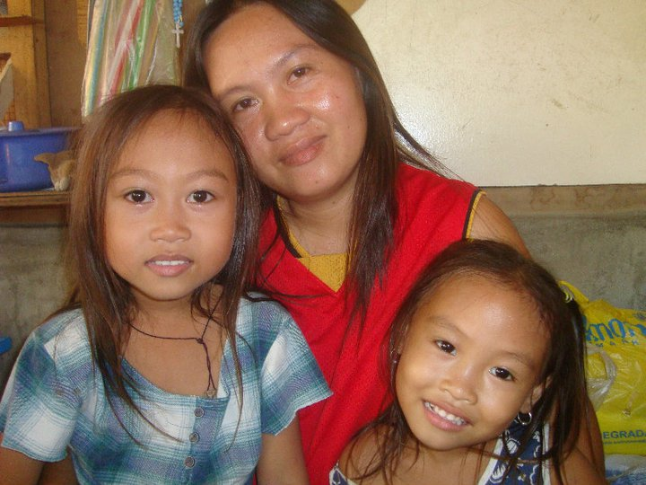

The Early Years
Growing up, I was fortunate to have incredibly supportive parents. Born in the scenic landscapes of Bohol but raised in the bustling city of Cebu, my childhood was a blend of natural beauty and urban excitement. My parents nurtured my curiosity and helped me navigate the challenges that came my way. While I may have been a handful with my ever-changing interests, their unwavering support made my early years truly fulfilling.
My academic journey has been, shall we say, "eclectic." From learning taekwondo and arnis as a kid, which fueled dreams of becoming a police officer (a dream gently discouraged due to my stature), to a month-long deep dive into programming at age 13, inspired by a cool hacker in a novel, my interests have always been diverse. High school brought a stint in journalism, sparking an interest in English Language. Let's not forget the flirtations with becoming a P.E. teacher, an electrical engineer (thanks, Dad!), or even someone in HR or psychology (because apparently, I'm a natural at judging people... constructively, of course!). And who could resist the allure of customs, where I hear the money is just flowing?
After finishing Senior High School, I took a detour into the BPO world for a year before attempting a move to Canada for studies. Despite being accepted into a state university, the Canadian dream beckoned. Alas, rejection struck, and due to a two-year process and financial realities set in. But did that stop me? Nope! After three years, I finally made it to college.
Despite the detours and setbacks, I wouldn't trade my experiences for anything. My parents' unwavering belief in me, even when we were drowning in debt from pursuing those dreams, has been my anchor. Their constant reminder that debt is just a temporary inconvenience and that we can achieve anything together has kept me going. So here I am, ready to embrace the next chapter, armed with a quirky past and a whole lot of parental support!